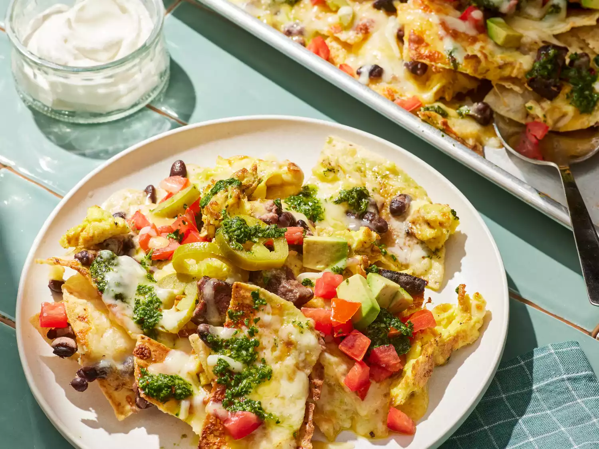

Nachos pour petit-déjeuner

Alors que les vacances d'été touchent à leur fin, faisons en sorte que le petit-déjeuner soit mémorable pendant que nous avons encore des matinées tranquilles pour nous détendre. Cette variante du steak et des œufs comprend des chips de tortilla garnies de vos garnitures de nachos préférées, un steak de fer plat poêlé, des œufs brouillés et une sauce chimichurri aux herbes.
Ingrédients
- 1 steak de fer plat (8 onces) , séché et épongé
- 3/4 cuillère à café de sel casher, divisé
- 1/2 cuillère à café de poivre noir moulu , divisé
- 1/2 cuillère à café de cumin moulu (facultatif)
- 2 cuillères à soupe d'huile d'olive
- 8 gros œufs
- 1 paquet (11 onces) de chips tortilla (comme Tostitos®)
- 2 paquets (8 onces) de mélange de fromage mexicain râpé (comme Tilamook ®)
- 1 boîte (15 onces) de haricots noirs , égouttés et rincés
- 1 tasse de tomates prunes hachées
- 1 avocat, haché
- 1/2 tasse de tranches de piment jalapeno marinées égouttées
- 1/2 tasse de crème sure, ou selon les besoins
Etapes
- Rassemblez tous les ingrédients.
- Pour le chimichurri : placez la coriandre, le persil, l'ail, le vinaigre, le piment rouge écrasé et le sel dans un petit robot culinaire ; mixez jusqu'à ce que le tout soit finement haché, environ 10 pulsations. Pendant que le robot tourne, versez l'huile dans le conduit d'alimentation et mixez jusqu'à ce que le tout soit bien incorporé, environ 20 secondes ; réservez.
- Pour le steak : saupoudrer uniformément le steak avec 1/2 cuillère à café de sel, 1/4 cuillère à café de poivre noir et du cumin, selon votre goût. Chauffer une poêle en fonte moyenne à feu moyen-vif pendant 5 minutes. Ajouter le steak et 1 cuillère à soupe d'huile, en tournant pour répartir l'huile uniformément. Cuire, sans remuer, jusqu'à ce qu'il soit bien doré et qu'un thermomètre inséré dans la partie la plus épaisse du steak indique 120 degrés F (49 degrés) pour une cuisson saignante, environ 3 minutes de chaque côté. Transférer sur une planche à découper et laisser reposer 10 minutes. Ne pas essuyer la poêle.
- Pendant ce temps, fouettez les œufs et le quart de cuillère à café restant de sel et de poivre noir dans un bol moyen jusqu'à ce que le tout soit bien mélangé. Faites chauffer une poêle en fonte à feu moyen. Ajoutez la cuillère à soupe d'huile restante et les œufs ; faites cuire en remuant de temps en temps jusqu'à ce que le mélange soit pris, environ 2 minutes. Transférez dans un bol, couvrez et réservez.
- Préchauffez le gril du four et placez une grille à environ 30 cm de la source de chaleur. Tapissez une grande plaque à pâtisserie à rebords de papier d'aluminium.
- Pour assembler les nachos, disposez la moitié des chips tortilla en une couche uniforme sur la plaque à pâtisserie préparée. Coupez le steak en fines tranches dans le sens contraire des fibres et coupez-le en morceaux de 3/4 po. Saupoudrez uniformément les chips tortilla avec la moitié du steak, la moitié des haricots, la moitié des œufs et la moitié du mélange de fromage mexicain. Répétez l'opération avec le reste des chips, du steak, des haricots, des œufs et du fromage.
- Faire griller jusqu'à ce que le fromage soit fondu et bouillonne, environ 2 minutes. Garnir de tomates, d'avocat et de piments jalapeños marinés. Arroser uniformément de chimichurri et servir avec de la crème sure.